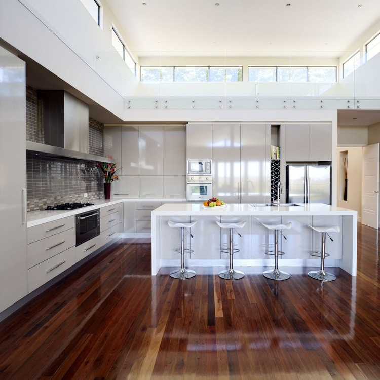

AkrilStone
Изделия из искусственного камня
Изготавливаем столешницы, мойки и другие изделия по размерам. Обсудим выбор камня и обработку кромок.
Рассчитать изделие
ПРИМЕРЫ РЕШЕНИЙ
Форма, кромка и рисунок
Посмотрите, как материал выглядит на разных поверхностях. Уточним размеры и конфигурацию изделия для расчёта.
Рассчитать изделие